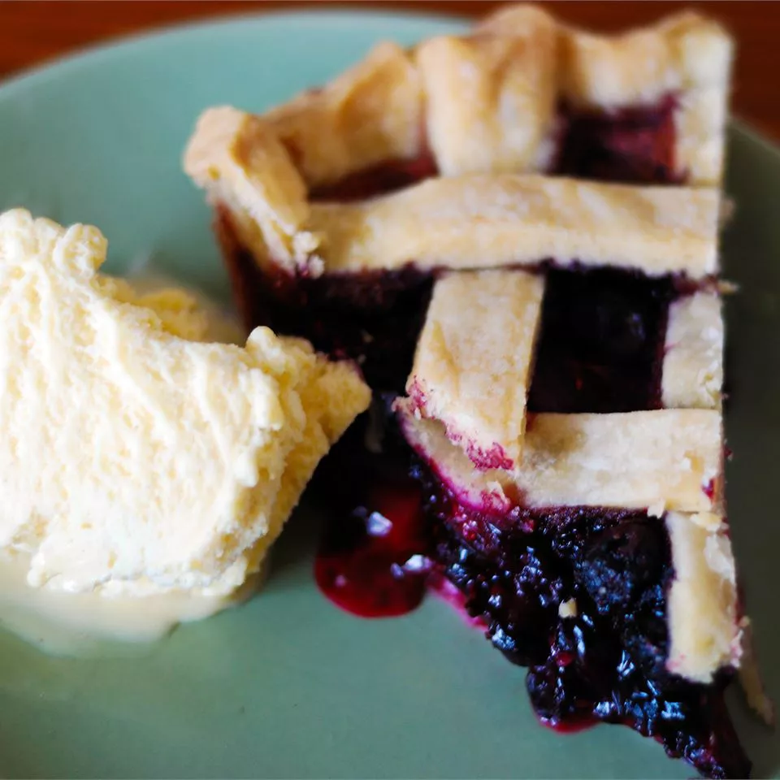

Homemade Blueberry Pie
This blueberry pie, made with fresh berries, is a beautiful sight wiht a lattice top.

- Prep Time: 25 mins
- Cook Time: 50 mins
- Total Time: 1 hr 15 mins
- Serving: 8
- Yield: 1 pie
Ingredients
- 3/4 cup white sugar
- 3 tablesppons cornstarch
- 1/2 teaspoon ground cinnamon
- 1/2 teaspoon salt
- 4 cups fresh blueberries
- 1(14.1 ounce) package double-crust pie pastry, thawed
- 1 tablespoon butter
Directions
- Set an oven rack to the lowest position and preheat the oven to 375 degrees F (190 degrees C).
- Mix sugar, cornstarch, cinnamon, and salt together in a bowl; sprinkle over blueberries.
- Line a pie dish wiht on pie crust. Pour berry mixture into the crust and dot with butter.
- Cut remaining pastry into 1/2- to 3/4-inch-wide-strips. Use the strips to weave a lattice top.
- Crimp and flute the edges.
- Bake pie on the lowest oven rack until filling is bubbling and crust is golden brown, about
50 minutes.
- Let cool, then enjoy!